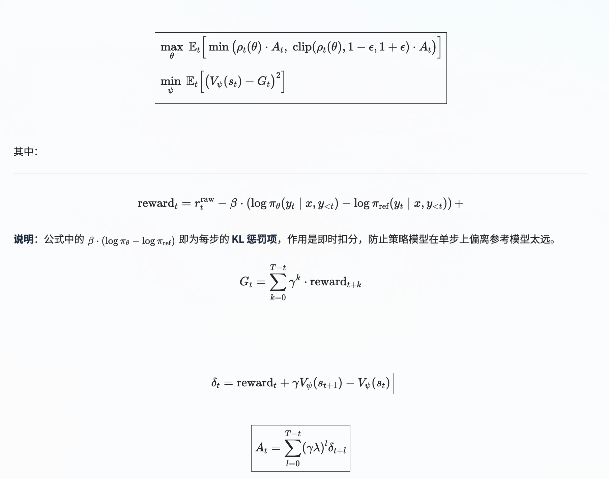
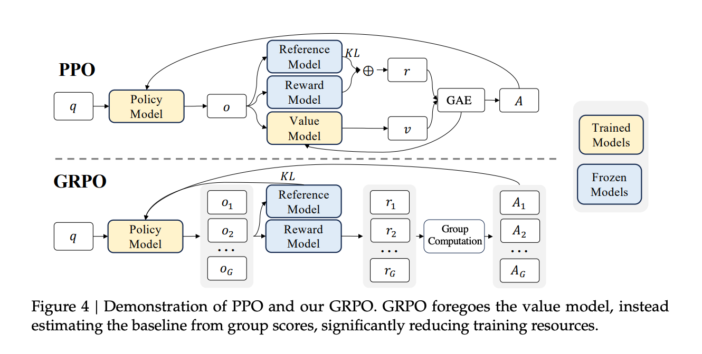

post training
1. 概述
| 算法 | 核心策略 | 最大优势 | 最大劣势 / 适用场景 |
|---|---|---|---|
| PPO | 价值模型 + GAE + 对称裁剪 | 最通用、最稳定、Credit分配最准 | 资源消耗极大，4个模型，调参复杂 |
| DPO | 数学变量替换（RL → 分类Loss） | 极简、稳定、省资源（无RL/无RM） | 离线依赖强，难以在线探索 |
| GRPO | 组内相对奖励（砍掉价值模型） | 高效省显存，适合数学/推理任务 | 熵崩溃、长度偏见、难度偏见、梯度消失 |
| DAPO | GRPO + Clip-Higher + 动态采样 + Token级Loss | 长序列最强，推理涌现快，训练步数减半 | 目前偏数学/代码，通用偏好待验证动态采样等机制会增加一定的采样成本 |
a PPO（强化学习的“黄金标准”）
一句话画像：通过“价值模型（Critic）+ GAE优势估计”精确评价每个词的好坏，并用“裁剪（Clipping）”死死按住策略不要一步跑偏。
核心优势：通用性最强，训练最稳，Credit（信用分配）最准。
核心痛点：资源消耗巨兽（需加载4个模型），调参极其复杂，大模型训练成本高。
b DPO（简化RL的“数学魔术”）
一句话画像：用数学恒等变换，直接把强化学习的复杂目标变成了“文字分类任务”，彻底绕开了强化学习。
核心优势：极简、极稳、极其省资源（只需2个模型，代码20行）。
核心痛点：纯离线学习，无法在线探索；极度依赖偏好数据质量，泛化能力弱。
c GRPO（DeepSeek的“高效版PPO”）
一句话画像：针对生成场景，砍掉价值模型（Critic），利用同一道题的“小组（Group）内相对胜负”来估算优势。
核心优势：比PPO省显存约30%~40%，特别适合有标准答案的数学/代码任务。
核心痛点：虽然高效，但存在“四大坑”——熵崩溃（探索不足）、梯度消失（全对样本废了）、长度偏见（越长越占便宜）、难度偏见（中等题被忽略）。
d DAPO（长CoT推理的“GRPO完全体”）
一句话画像：专治GRPO的“四大坑”。通过调高上裁剪（Clip-Higher）、过滤样本（Dynamic Sampling）、改平均方式（Token-level Loss）和移除KL约束，专为长思维链推理优化。
核心优势：当前长推理场景的SOTA（AIME 2024达到50分），能让模型自发涌现出“反思、回溯”等高级行为，训练步数减半。
核心痛点：目前主要适用于数学/代码等确定性规则奖励领域，通用RLHF效果有待验证；计算成本略高于GRPO。
2. 核心方法
2.1 SFT
监督微调是 Post-training 最基础也最直观的方法。核心思路是：收集高质量的(prompt, response)数据对，然后用标准的交叉熵损失函数对预训练模型进行微调。SFT 的数据通常包括：
- 指令跟随数据（如 Alpaca、ShareGPT 格式的对话）
- 特定领域的专业数据
- 多轮对话数据
SFT 的常见实现方式包括：
- 全参数微调（Full Fine-tuning）
- 参数高效微调（PEFT），以LoRA和QLoRA最为流行。 LoRA 通过在模型权重矩阵旁边添加低秩分解矩阵来实现高效训练，通常只需要训练原始参数量的 0.1%~1%。
知识蒸馏（Knowledge Distillation）
合成数据（Synthetic Data）在 SFT 中扮演着越来越重要的角色——用更强的模型（如 GPT-4）生成训练数据来教较小的模型
2.2 RLHF — 基于人类反馈的强化学习
RLHF 是 InstructGPT 和 ChatGPT 背后的核心技术，由 OpenAI 在 2022 年系统阐述。其完整流程分为三步：
Step 1：监督微调（SFT）
首先收集人类撰写的高质量回答，对预训练模型进行监督微调，得到一个初始的 SFT 模型。这一步是后续 RL 训练的前提条件。
Step 2：训练 Reward Model
对于每个 prompt，让 SFT 模型生成多个（通常 4 个）不同的回答，然后由人类标注者对这些回答进行排序。利用这些排序数据，训练一个 Reward Model（奖励模型），使其能够对任意回答给出一个标量分数，反映该回答的质量。使用 Bradley-Terry（BT）模型，这是把“相对排序”变成“绝对分数差”的灵魂公式。
Step 3：PPO 优化
使用训练好的 Reward Model 作为奖励信号，通过 PPO 算法对 SFT 模型进行进一步优化。在这个过程中，模型不断生成回答、获得奖励、更新策略，逐步学会生成更符合人类偏好的内容。
2.3 PPO — RL 的主力算法
核心思想
在 LLM 训练中，模型本身就是策略（Policy）：prompt 可以看作状态，模型生成的 token 序列可以看作动作。
PPO 的目标是让策略朝着更高奖励的方向更新，同时通过 clipping 机制和 KL 惩罚限制新旧策略差异，避免一次更新幅度过大导致训练不稳定。
在 LLM 训练中，模型本身就是策略（Policy）：prompt 可以看作状态，模型生成的 token 序列可以看作动作。
Loss
PPO 损失函数：Lₚₚₒ = -L裁剪策略 loss + c₁ · L价值预测 loss
裁剪策略损失（Clipped Policy Loss）—— 用于更新策略模型（Actor）
价值预测损失（Value Loss）—— 用于更新价值模型（Critic）

PPO 在 LLM 训练中需要同时维护四个模型：
| 模型 | 角色 | 说明 | 是否更新 |
|---|---|---|---|
| Policy Model | 被训练的 LLM | 生成回答，是我们最终要得到的模型 | 是 |
| Reference Model | 初始策略的冻结副本 | 用于计算 KL 散度，防止策略偏离太远 | 否 |
| Reward Model | 评估完整回答质量 | 训练：基于人工排序的偏好数据（相对比较）训练得到，旨在为任意完整回答赋予一个绝对质量分数。在 PPO 中对生成的完整回答的打分 | 否 |
| Value Model (Critic) | 估计状态价值 | 直接复用训练完毕的奖励模型权重进行初始化。用于计算 Advantage 值，即“这个回答比平均水平好多少” | 是 |
主要问题
需要同时加载四个模型，显存开销巨大；训练过程中需要在生成（rollout）和更新之间反复切换，工程复杂度高；超参数敏感，调参困难。
2.4 DPO — 不需要 RL 的偏好优化
核心思想
RLHF 需要先训练奖励模型再用 PPO 优化，流程复杂且不稳定。DPO 则通过重新参数化奖励函数，将同一目标等价转化为可直接梯度下降的分类损失，实现了更简单、更稳定、更高效的对齐训练。
DPO 的核心洞察：RLHF 的最优解可以被重新参数化为一个简单的分类损失函数。
在 RLHF 中，奖励模型 rϕ(x, y) 和最优策略 π∗(y∣x) 之间存在一个数学恒等式：
当把这个恒等式代入 BT 损失时，讨厌的Z(x)（配分函数）恰好被约掉了，于是 BT 损失中原本的 rϕ(x, yw) − rϕ(x, yl) 被替换成了策略模型的对数概率差。
给定一对 (preferred response, rejected response)， DPO 直接最大化 preferred response 的对数概率相对于 rejected response 的优势，同时通过 reference model 进行正则化。
Loss
| 维度 | RLHF (PPO) | DPO |
|---|---|---|
| 人工偏好数据 | 需要 | 需要（同等量级） |
| 是否训练奖励模型 | 是（需要额外前向传播和存储） | 否（直接消去） |
| 是否使用强化学习 | 是（PPO，策略梯度，高方差） | 否（纯监督学习，梯度下降） |
| 训练时的显存占用 | 极高（需同时加载4个模型） | 低（只需加载2个模型：策略模型+参考模型） |
| 训练稳定性 | 差（对 KL 惩罚系数、学习率极其敏感） | 好（类似 SFT，稳定收敛） |
主要问题
a 探索能力差
DPO 系列方法属于 offline 方法——它们使用预先收集的静态数据进行训练，不需要在训练过程中让模型生成新的回答。这使得它们比 PPO/GRPO 等 online RL 方法更简单、更稳定，但也意味着它们无法从模型自身的探索中学习，在推理能力方面不如 online RL 方法有效。
b 分布外（OOD）问题
隐式奖励模型只在偏好数据分布上有效，一旦离线数据覆盖不足，泛化能力受限。
2.5 GRPO（Group Relative Policy Optimization）— 去掉 Critic 的轻量级 RL
核心思想
GRPO 核心思想：摒弃 value net，使用组内平均计算优势。
GRPO 由 DeepSeek 团队在 2024 年提出，是当前开源推理模型训练中最流行的 RL 算法。为 LLM 后训练提供一个更高效、更轻量级的强化学习替代方案，尤其聚焦于提升复杂推理能力。GRPO 的初衷可以概括为：
- 效率优先：正如前文所述，通过去除价值网络， GRPO 旨在解决 PPO 在大模型上训练时“资源消耗过大”的核心痛点。
- 简化流程：GRPO 不仅去掉了价值网络，也简化了 PPO 中复杂的 GAE（广义优势估计）计算过程，减少了需要调整的超参数，使整个训练流程更加简洁稳定。
- 目标明确：它最初由 DeepSeek 提出，并在 DeepSeek-Math 和 DeepSeek-R1 等模型上被成功应用，目标就是为了有效提升 LLM 在数学、逻辑等复杂任务中的推理能力

Loss
双层平均：由于奖励模型提供的是回复级别（response-level）的评分，而非逐 token 的稠密奖励，GRPO 的损失函数在结构上采用双层平均设计：首先对每个回复内的所有 token 损失进行平均，以消除回复长度差异带来的偏置；再在组内（group）对所有回复的损失进行平均，以保持与组内相对优势（group-relative advantage）的语义一致性。（组内平均是因为 advantage 的绝对值在不同组之间不可比）
KL 在 Loss 层，不在 Reward 层：保持 Advantage 纯粹反映质量信号，让策略更新方向更准确；同时使 β 调参更独立、更稳定，降低超参数敏感性。
GRPO 的工作流程如下：
对于每个 prompt，采样 G 个（通常 8~64 个）回答，分别获得奖励分数 r₁, r₂, ..., r_G。然后对这组奖励进行归一化：
这样，组内表现好于平均水平的回答获得正的 advantage（被鼓励），差于平均水平的获得负的 advantage（被抑制）。这种方式不需要单独训练一个 Value Model，大幅降低了资源需求。
| 对比维度 | PPO | GRPO |
|---|---|---|
| 所需模型数 | 4 个 | 2~3 个（无 Critic） |
| Advantage 估计 | Value Model (Critic) | 组内归一化 |
| 显存需求 | 高 | 较低 |
| 采样方式 | 每个 prompt 1 个回答 | 每个 prompt G 个回答 |
| 训练稳定性 | 需要精细调参 | 相对简单 |
| 典型应用 | ChatGPT, InstructGPT | DeepSeek-R1, Qwen3 |
优势
a. 大幅降低计算成本
GRPO 最大的优势是消除了对价值网络（Critic）的依赖。GRPO 只需 Actor、Reference、Reward 三个模型，显存节省约 40%
b. 相对奖励提升训练稳定性
GRPO 的优势计算采用组内归一化机制使模型更关注组内相对优劣而非绝对奖励值，减少因奖励值波动带来的干扰。同时， GRPO 将 KL 惩罚直接作为损失函数项（PPO 中放在奖励函数里），进一步稳定训练过程。
c. 涌现强大的推理能力
GRPO 强制模型对同一问题生成多个回答并进行组内比较，实质上是强制探索多样化的解题路径。在探索和对比取舍的过程中，模型学会评估不同策略的优劣——这正是数学、代码等领域涌现复杂推理能力的根本原因。DeepSeek-R1 的成功充分证明了 GRPO 范式的有效性。
主要问题
a. 熵崩溃（Entropy Collapse）
问题描述：
- 训练过程中，策略模型的熵迅速下降，导致生成的概率分布过于尖锐（确定性过高）
- 同一组（group）内采样的回复趋于相同，缺乏多样性
根本原因：
- GRPO 的上裁剪（upper clip）阈值限制了低概率“探索性” token 的提升空间。当 ε = 0.2 且 Â_t > 0 时，概率为 0.01 的 token 最多只能提升到 0.012，增长空间极其有限。而高概率 token（如 0.9）则轻松提升到接近 1.0。
后果：
- 探索能力受限，模型过早收敛到确定性策略
- 无法通过采样发现新的推理路径
b. KL 散度约束不再适用
问题描述：
- GRPO 保留了 PPO 中的 KL 散度惩罚项，用于约束策略不偏离参考模型。
- 但在长 CoT 推理场景中，模型需要大幅偏离初始分布才能发展出复杂的推理能力
后果：
- KL 惩罚限制了模型的探索空间，阻碍推理能力的涌现
- DAPO 直接移除了 KL 项
c. 难度偏见
问题描述：GRPO 根据“同一批题的标准差”调整权重：
- 太简单的题：大部分人做对，标准差小 → 被过度关注
- 太难的题：大部分做错，标准差也小 → 也被过度关注
- 中等难度的题：有人对有人错，标准差大 → 反而被忽略
d. 梯度消失
问题描述：
- 当某个 prompt 的所有采样回复都正确（accuracy = 1）时，该组内所有样本的奖励相同
- GRPO 的组内归一化优势值为：Â_i = (R_i - mean)/(std + ϵ) = 0
- 优势值为零 → 策略梯度为零 → 这些样本对模型训练无贡献。
后果：
- 随着训练推进，越来越多的 prompt 被模型正确解决
- 有效 batch size 持续萎缩，梯度信号减弱
- 训练效率大幅下降，梯度方差增大
e. 长度偏见：样本级损失对长序列不友好
问题描述：
- GRPO 先对每个样本内部的 token 损失求平均，再对样本间求平均
- 每个样本在最终损失中获得相同的权重，无论其长度
后果：
- 高质量长回复奖励被"稀释"：高质量长回复中的推理模式对梯度贡献被削弱
- 无法惩罚长序列中的低质量模式：因为损失按 token 平均，长错误答案每个 token 挨骂更轻，所以模型学会用“写长”来“稀释惩罚”，导致“又长又错”。
f. 截断样本的奖励噪声（Reward Noise from Truncation）
问题描述：
- GRPO 默认对超出最大长度的样本给予惩罚性奖励（如 -1）
- 但一条推理过程正确的样本可能仅仅因为长度超标而受到惩罚
后果：
- 奖励信号被污染 → 模型混淆"推理是否正确"和"长度是否合适"
- 训练不稳定，性能下降
为什么强化学习有效
论文评估了 Instruct 模型和 RL 模型在两项基准测试上的 Pass@K 和 Maj@K 准确率。RL 提升了 Maj@K 的性能，但没有提升 Pass@K。这些发现表明，RL 是通过使模型的输出分布更加鲁棒来增强模型的整体性能的，换言之，这种提升似乎主要归因于提高了 TopK 中正确答案的命中率，而非增强了模型的基础能力。
Pass@K：衡量能力的上限
- 定义：生成 K 个回答，只要至少有一个正确，问题即通过。
- 本质：测“能不能想到”，反映模型掌握该知识的潜在能力边界。
Maj@K：衡量输出的鲁棒性
- 定义：生成 K 个回答，对最终答案多数投票，得票最多的答案正确才算通过。
- 本质：测“能不能稳定答对”，反映模型输出分布的可靠程度。
2.6 DAPO（Decoupled Clip and Dynamic Sampling Policy Optimization）
核心思想
在 GRPO 的基础上，通过“解耦上下裁剪阈值”、“动态过滤无效样本”和“Token 级损失重加权”，彻底解决熵崩溃、梯度消失、长度偏见和难度偏见，让 RL 在长思维链（Long-CoT）场景下稳定、高效地激发推理能力。
Loss
token 级 loss + 去掉KL惩罚
DAPO 具体包含以下四大核心技术：
a. 解耦裁剪（Decoupled Clip）
这是 DAPO 对 GRPO 裁剪机制的重大改进。GRPO 使用单一的对称裁剪区间[1-ε, 1+ε]，这相当于对好坏策略更新都使用相同的步长限制，过度限制了对好样本的探索。DAPO 则采用下界低、上界高的非对称裁剪。这意味着，当模型生成好的样本时， DAPO 允许它进行更大胆的更新（鼓励探索）；而当生成坏的样本时，依然会严格控制更新幅度，防止模型崩溃。这种非对称设计有效缓解了大模型强化学习中常见的“熵崩溃”现象。
b. 动态采样（Dynamic Sampling）
简单或难的问题标准差小，优化时会过多关注。GRPO 的训练数据通常来自离线数据集。DAPO 引入了动态采样机制，在训练过程中持续淘汰“已掌握”的简单问题，并动态补充更具挑战性的新问题。这确保了模型不会浪费计算资源在“舒适区”内重复学习，而是持续面对高价值的难题，从而进行“刻意练习”。
不过，关于 DAPO，尤其是其“动态采样”组件的效果，学界存在不同观点。Lian（2025）的研究发现，在某些特定任务上，禁用“动态采样”后的 DAPO 性能反而更好。
c. Token 级策略梯度损失（Token-Level Policy Gradient Loss）
在损失函数的选择上， DAPO 与 GRPO 存在关键差异：
- GRPO：默认使用样本级损失（Sample-Level Loss）。一个只生成了 100 个 Token 的短回答和另一个生成了 1000 个 Token 的长回答，在损失函数中的权重是一样的。这会导致长回答中的每个 Token 被严重“稀释”，模型很难学会生成长且复杂的推理链。
- DAPO：改用 Token 级策略梯度损失（Token-Level Loss）。在这种方法下，长回答因其包含更多 Token，对损失的贡献更大，相当于每个 Token 都得到了平等的关注。这确保了模型能够更好地学习那些需要长序列推理的复杂问题，实现了长序列的精准优化。
d. 软过长惩罚（Soft Overlong Punishment）
DAPO 采用了一种渐进的“软惩罚”机制代替 GRPO 的“硬截断”。当模型生成的回答略微超出长度限制时， DAPO 不会直接丢弃，而是根据超出程度，给予一个轻微的奖励惩罚分（Reward Shaping）。
DAPO vs. GRPO
| 问题 | GRPO 的缺陷 | DAPO 的解决方案 | 体现在 Loss 的哪里？ |
|---|---|---|---|
| 熵崩溃 | 上下裁剪对称(ε=0.2)，低概率 token 涨不动 | Clip-Higher：ε_high 调高至 0.28 | 裁剪范围改为 [1-ε_low, 1+ε_high] |
| 长度偏见 | 样本级平均，长序列梯度被稀释 | Token-Level Loss | 分母从 1/G 改为 1/∑ |
| 梯度消失 | 全对/全错样本贡献为 0 | Dynamic Sampling | 增加约束条件 0 < 正确数 < G |
| 难度偏见 | 近乎全对/全错被过度关注 | Dynamic Sampling | 同上，只保留“有对有错”的组 |
| KL 约束 | 限制偏离参考模型，阻碍推理涌现 | 移除 KL 项 | Loss 中不再有 -β·D_KL |
2.7 RLVR — 可验证奖励：推理模型的关键
RLVR（Reinforcement Learning with Verifiable Rewards）是 2025 年最重要的技术趋势之一。与 RLHF 使用学习得到的 Reward Model 不同， RLVR 使用基于规则的确定性验证器来提供奖励信号。RLVR 的适用场景是那些答案可以被客观验证的领域：
| 领域 | 验证方式 | 示例 |
|---|---|---|
| 数学 | 字符串匹配 / Math-Verify | “答案是 42” vs 标准答案 |
| 代码 | 沙箱执行 + 测试用例 | 运行代码，检查输出是否通过所有测试 |
| 逻辑推理 | 规则验证 | 检查推理步骤的逻辑一致性 |
| 科学问题 | LLM Judge | 用另一个 LLM 判断答案等价性 |
RLVR 的奖励设计通常包含两部分：准确性奖励（答案是否正确）和格式奖励（输出是否符合要求的格式，如<think>...</think><answer>...</answer>）。DeepSeek-R1 就是使用 GRPO + RLVR 训练的典型代表。
关键认知：RLVR 之所以重要，是因为它解决了 RLHF 中 Reward Model 的两大痛点——reward hacking（模型学会欺骗 Reward Model 而非真正变好）和标注成本高。在可验证领域，规则就是最好的奖励函数。
2.8 DeepSeek-R1：纯 RL 训练推理模型的里程碑
DeepSeek-R1 是 2025 年初最具影响力的工作之一，它首次证明了纯 RL 训练（不需要 SFT）就能让模型涌现出强大的推理能力。
DeepSeek-R1 的训练分为两条路线：
- R1-Zero（纯 RL 路线）：直接在预训练的 DeepSeek-V3 基座模型上，使用 GRPO + RLVR 进行训练，完全跳过 SFT 阶段。令人惊讶的是，模型在训练过程中自发涌现出了复杂的推理行为——包括自我反思（“Wait, let me reconsider...”）、问题分解、多路径探索等。这些行为并非被显式编程，而是 RL 训练过程中自然产生的，被称为“Aha moment”。
- R1（完整路线）：在 R1-Zero 的基础上，加入了 SFT 数据进行冷启动（cold start），然后再进行 RL 训练。这种方式产出的模型在格式规范性和可读性上优于 R1-Zero，同时保持了强大的推理能力。
重要发现：随着 RL 训练的推进，模型生成的回答长度会自然增长——模型学会了“多想一会儿”来解决更难的问题。这本质上是 inference-time scaling 在训练端的体现。
3. 全局视角：技术如何协同工作
理解了各个组件之后，让我们看看它们如何在一个完整的 Post-training pipeline 中协同工作。以当前主流的推理模型训练流程为例：
- SFT 是基础但不够
SFT 教会模型输出的格式和风格，但无法让模型学会超越训练数据的推理能力。对于对齐和推理，我们需要更强大的训练信号。
- RL 是提升推理能力的关键
从 PPO 到 GRPO， RL 算法在不断简化和高效化。GRPO 去掉了 Critic 模型， DAPO 进一步解决了熵坍塌等工程问题。DeepSeek-R1 证明了纯 RL 就能涌现推理能力。
- 奖励信号的设计至关重要
从 RLHF（人类反馈）到 RLAIF（AI 反馈）再到 RLVR（可验证奖励），奖励信号的获取方式在不断演进。RLVR 在可验证领域（数学、代码）表现出色，但如何将其扩展到开放域任务仍是开放问题。
- Online RL vs. Offline Preference Optimization 各有所长
DPO 等 offline 方法简单稳定，适合偏好对齐；PPO/GRPO 等 online 方法能从探索中学习，更适合提升推理能力。实践中通常两者结合使用。
- Agentic RL 是下一个前沿
从单轮问答到多轮工具使用， Post-training 正在向训练完整的“智能体”方向发展。
4. 前沿方向：2025-2026 年的新趋势
4.1 Agentic RL：从“回答问题”到“完成任务”
传统的 RLHF/RLVR 训练的是单轮问答能力，而 Agentic RL 则训练模型在多步骤任务中交替进行推理和工具调用。例如：
- Search-R1：训练模型学会“什么时候该搜索、搜索什么、如何利用搜索结果”
- ReTool：训练模型学会在推理过程中调用计算器、代码解释器等工具
Agentic RL 面临的核心挑战包括：多轮交互中的 credit assignment（哪一步决策导致了最终的成功或失败）、稀疏奖励（只有任务完成时才有反馈），以及推理与工具使用之间的资源竞争。
4.2 Reward Model 的演进
Reward Model 正在从简单的标量打分模型演进为更复杂的形式：
- Process Reward Model（PRM）：对推理的每一步进行评分，而非只看最终答案
- Generative Reward Model：用 LLM 本身作为 judge 来评估回答质量
- Multi-objective Reward：同时优化多个维度（准确性、安全性、简洁性等）
4.3 Synthetic Data 的角色
合成数据在 Post-training 中的重要性持续上升。当前的最佳实践是：用强模型生成大量候选回答，通过 verifier 筛选出正确的，再用这些数据进行 SFT 或作为 RL 的 warm-up。这种“生成-验证-训练”的循环正在成为标准范式。
5. 总结与关键要点
LLM Post-training 是一个快速演进的领域，但其核心逻辑可以归纳为以下几点：
- SFT 是基础但不够
SFT 教会模型输出的格式和风格，但无法让模型学会超越训练数据的推理能力。对于对齐和推理，我们需要更强大的训练信号。
- RL 是提升推理能力的关键
从 PPO 到 GRPO， RL 算法在不断简化和高效化。GRPO 去掉了 Critic 模型， DAPO 进一步解决了熵坍塌等工程问题。DeepSeek-R1 证明了纯 RL 就能涌现推理能力。
- 奖励信号的设计至关重要
从 RLHF（人类反馈）到 RLAIF（AI 反馈）再到 RLVR（可验证奖励），奖励信号的获取方式在不断演进。RLVR 在可验证领域（数学、代码）表现出色，但如何将其扩展到开放域任务仍是开放问题。
- Online RL vs. Offline Preference Optimization 各有所长
DPO 等 offline 方法简单稳定，适合偏好对齐；PPO/GRPO 等 online 方法能从探索中学习，更适合提升推理能力。实践中通常两者结合使用。
- Agentic RL 是下一个前沿
从单轮问答到多轮工具使用， Post-training 正在向训练完整的“智能体”方向发展。
← 返回 AI